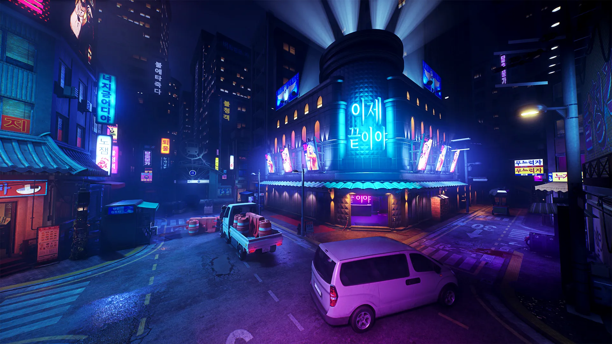
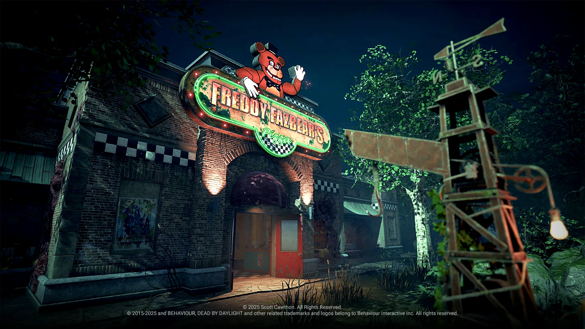
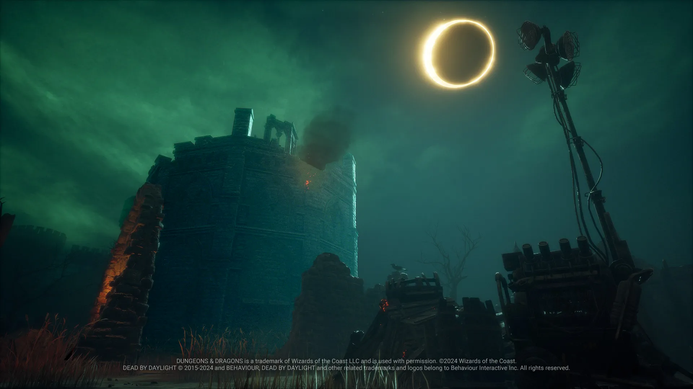
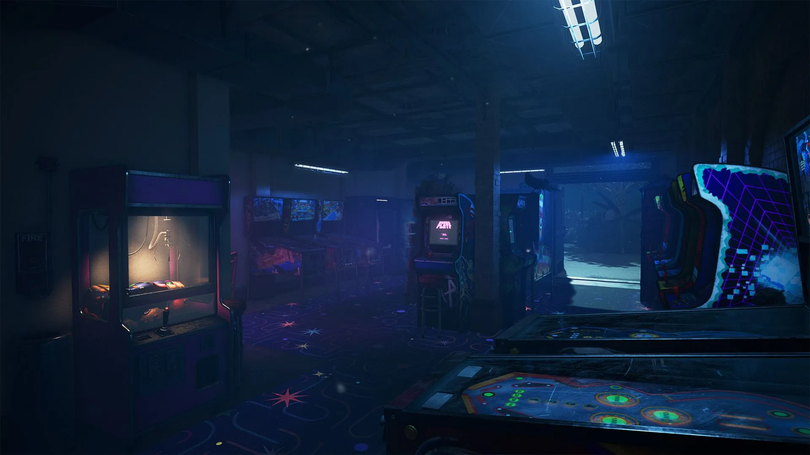
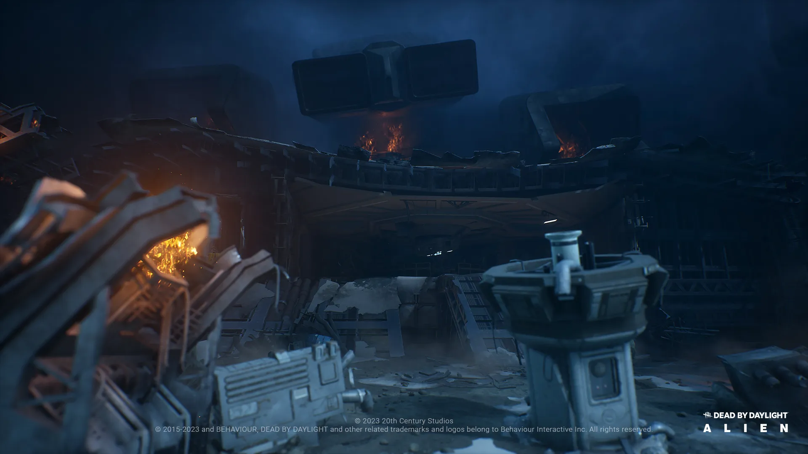
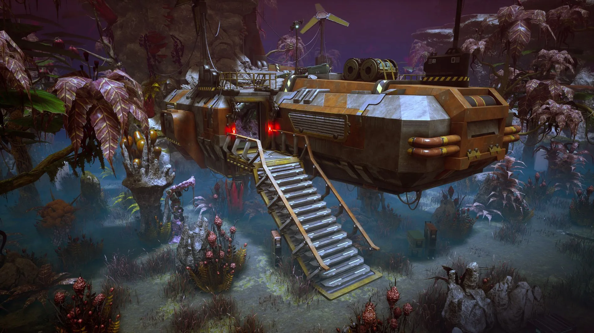
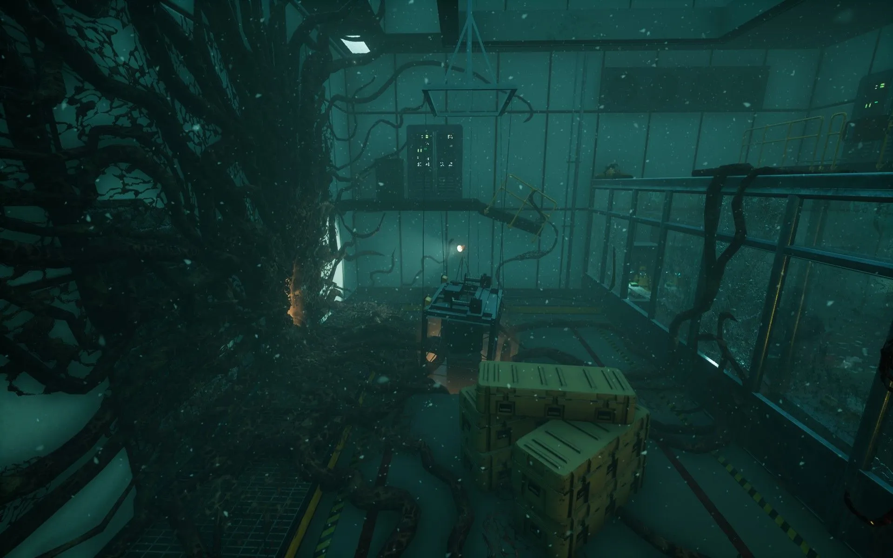
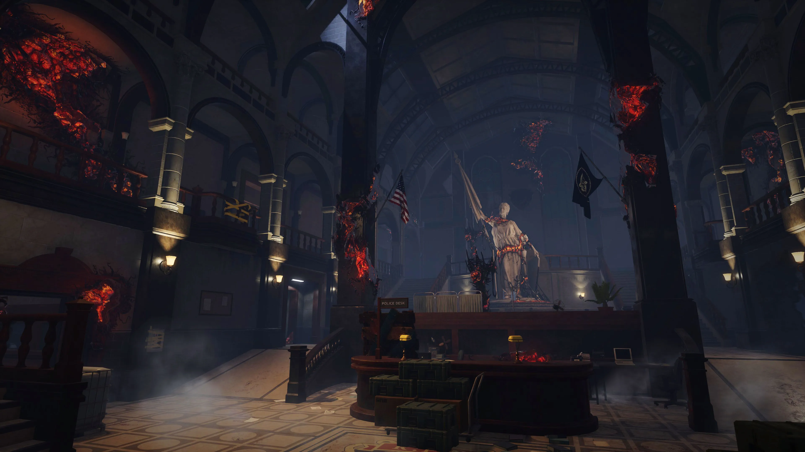

Os cenários icônicos e reinos sombrios da Entidade.

Desilusão do Trapaça
Entre no Distrito Insone e explore o mapa Desilusão do Trapaça,
marcando a primeira vez que uma
área urbana foi acrescentada à Névoa.
Este mapa mergulhado em neon leva os jogadores a um cenário urbano visualmente distinto.

Pizzaria do Freddy Fazbear
A criação podre de um assassino sádico ainda paira sobre as
planícies. Um lugar alegre para alguns, mas aterrorizante para outros. Não se deixe enganar pelas
cores vibrantes e atrações do salão. Muitos morreram entre estas paredes, e muitos ainda morrerão.

As Ruínas Esquecidas
Extraída das memórias de alquimistas, guerreiros, contadores de histórias e criminosos, as
Ruínas Esquecidas são um amálgama de conhecimento oculto e segredos obscuros.

Praça de Greenville
Um pedacinho de uma cidade estadunidense abandonada e esquecida há muito tempo. Agora algo
vaga livremente por entre as ruas tomadas pela vegetação: uma criatura contorcida responsável por
diversos desaparecimentos pelo país.

Destroços da Nostromo
Uma nave de carga interestelar industrial e brutal, onde a vida humana dá lugar a uma
eficiência cruel. Do poço das memórias de Ripley, um reino sombrio e desesperançoso se manifesta
como um pesadelo aterrorizante.

Pouso do Lago Toba
Uma selva frondosa repleta de fauna e flora diferentes de tudo o que há na Terra. Apreciar
sua beleza pode ser letal.

O Complexo Subterrâneo
O Laboratório Nacional de Hawkins ainda está de pé, um sombrio lembrete dos eventos
perturbadores que ocorreram lá, a maioria dos quais permanece oculta, exceto para os poucos que os
testemunharam em primeira mão.

Raccoon City
Um antigo museu de arte que se transformou em um baluarte da justiça, a Delegacia de
Raccoon City foi destruída pelo surto epidêmico. Até mesmo os policiais mais corajosos foram tomados
pelos mortos furiosos.